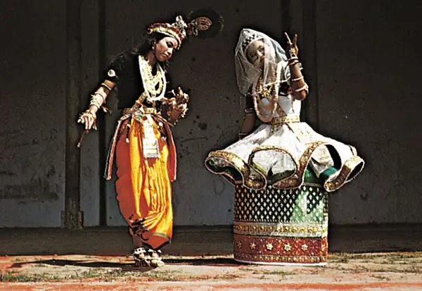

RAAS LEELA

The Manipuri Dance, also referred to as the Manipuri Raas Leela (Meitei: Jagoi Raas, Raas Jagoi[4][5][6]), is one of the eight major Indian classical dance forms, originating from the state of Manipur.[7] The dance form is imbued with the devotional themes of Madhura Raas of Radha-Krishna and characterised by gentle eyes and soft peaceful body movements. The facial expressions are peaceful mostly expressing Bhakti Rasa or the emotion of devotion, no matter if a dancer is Hindu or not. The dance form is based on Hindu scriptures of Vaishnavism and is exclusively attached to the worship of Radha and Krishna. It is a portrayal of the dance of divine love of Lord Krishna with goddess Radha and the cowherd damsels of Vrindavan, famously known as the Raas Leela.[8][9][10]
The roots of the Manipuri Raas Leela dance, as with all classical Indian dances, is the ancient Hindu Sanskrit text Natya Shastra, with influences and the culture fusion between various local folk dance forms.[11] With evidence of Vishnu temples in the medieval era, this dance form has been passed down verbally from generation to generation as an oral tradition.[12][13] At a time when other Indian classical dances were struggling to shake off the stigma of decadent crudity and disrepute, the Manipuri classical dance was a top favorite with girls of 'respectable' families.